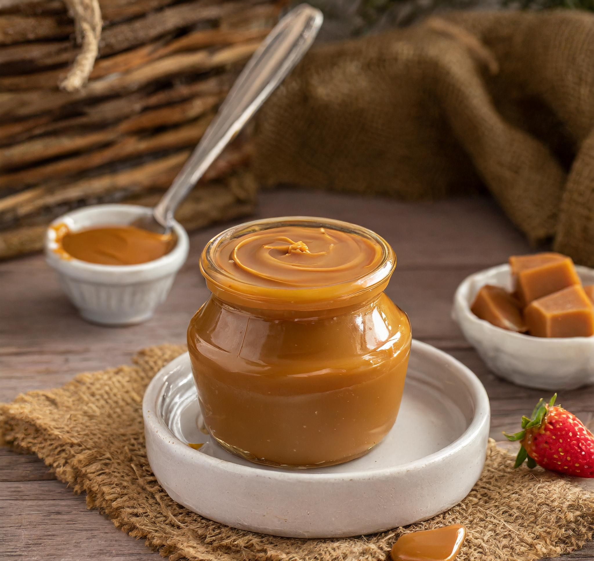

Receita de Doce de Leite
Este doce de leite é uma sobremesa clássica e irresistível, perfeita para os amantes de doces cremosos e açucarados. Você pode desfrutar do doce de leite cremoso ou seguir as instruções adicionais para fazê-lo em cubos. Prepare-se para se deliciar!
PEGUE!:
- 1 litro de leite integral
- 400g de açúcar cristal
- 1 colher de sopa de manteiga sem sal
- 1 colher de chá de essência de baunilha (opcional)
- 1 pitada de bicarbonato de sódio
FAÇA! (Doce de Leite Cremoso):
- Em uma panela grande, misture o leite, o açúcar, a manteiga e a essência de baunilha (se estiver usando) e leve ao fogo médio.
- Quando começar a ferver, adicione a pitada de bicarbonato de sódio e mexa bem. Isso ajudará a evitar que o leite transborde.
- Reduza o fogo para médio-baixo e cozinhe, mexendo ocasionalmente, por cerca de 1 hora e meia a 2 horas, ou até o doce de leite atingir a consistência desejada e adquirir uma cor dourada.
- Retire do fogo e deixe esfriar completamente.
- Transfira para potes esterilizados e guarde na geladeira.
- Sirva o doce de leite puro, com queijos, pães, bolos ou use-o como recheio para diversas sobremesas. Aproveite!
FAÇA! (Doce de Leite em Cubos - opcional):
- Após o doce de leite atingir a consistência desejada e adquirir uma cor dourada, despeje-o em uma forma forrada com papel manteiga, espalhando uniformemente.
- Deixe o doce de leite esfriar até ficar firme o suficiente para cortar em cubos.
- Com uma faca levemente untada com manteiga, corte o doce de leite em cubos do tamanho desejado.
- Retire os cubos da forma e sirva-os como uma deliciosa alternativa ao doce de leite cremoso tradicional.